ТРЕНДЫ
В мире масс-маркета так сложно оставаться уникальным? Кастомизация — ваш главный ответ однообразию. Это не просто про апгрейд одежды, а про язык, на котором ваше «я» говорит с миром. В этом сезоне тренды персонализации стали как никогда разнообразны: от дерзкого хардкора до тонкой художественной работы. Давайте разберемся, какие из них говорят именно на вашем языке
ФУРНИТУРА И ОБВЕСЫ
это модное направление подразумевает добавление внешних элементов — металлических цепочек, карабинов, заклёпок, молний и декоративных элементов к одежде и аксессуарам. Особую популярность набирают многофункциональные брелоки: их цепляют не только на сумки, но и на ремни, поясные шлевки джинсов и даже на грудки пиджаков, превращая утилитарный предмет в ключевой акцент образа. Обвесы делают вещи уникальными и придают им «индустриальный» или «гранжевый» стиль. Такие детали позволяют преобразить базовую вещь без глобальных изменений. Популярность связана с желанием выделиться, показать индивидуальность и придать предметам особый характер
начните с кожаной куртки или старой джинсовой жилетки. Не бойтесь смешивать металлы — в этом тренде несовершенство и грубоватость лишь добавляют шарма
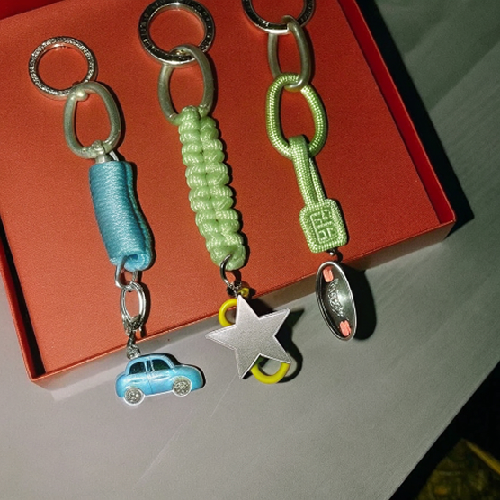
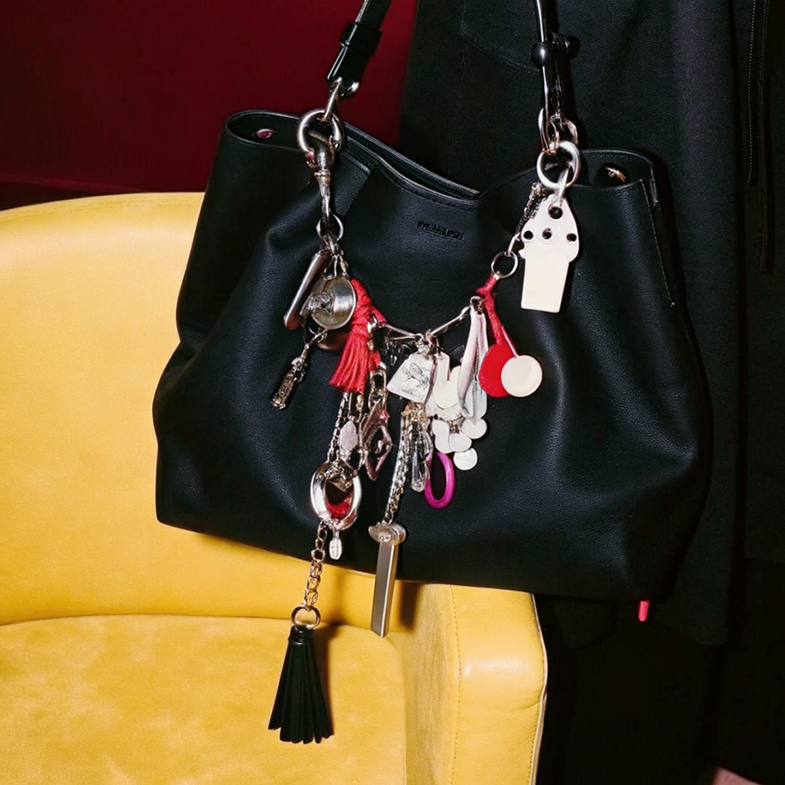
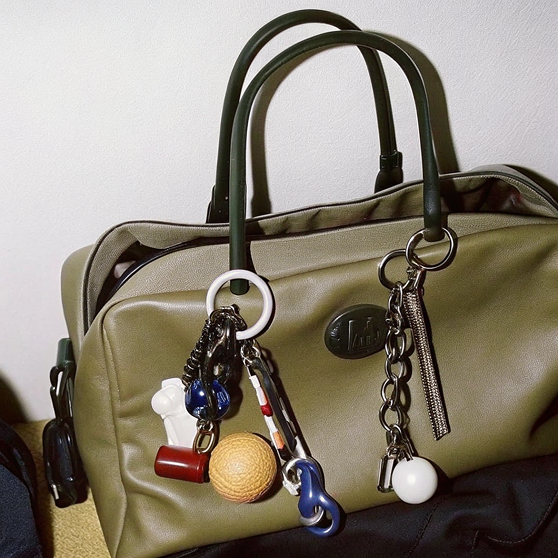
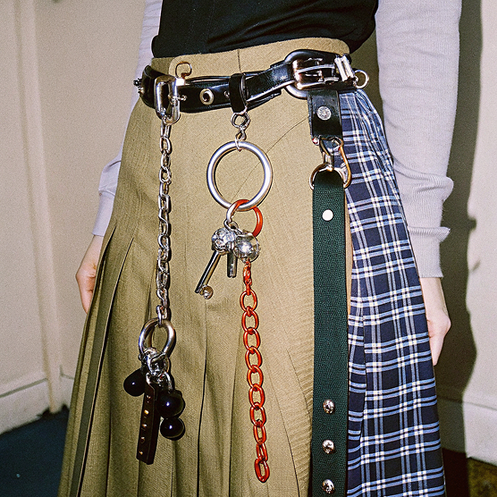
если металлические заклепки и звон цепочек с брелоками — это смелый, почти панковский протест, который говорит на языке тактильных ощущений и слышимого «звона», то следующий тренд обращается к тем, кто видит в одежде чистый холст. от тактильной магии фурнитуры мы переходим к визуальным образам, где главный инструмент — ваше воображение и кисть
РОСПИСЬ КРАСКАМИ
персонализированная роспись по ткани или коже — один из самых творческих и универсальных трендов. Можно использовать акриловые, текстильные краски или аэрографию, создавая уникальные узоры, иллюстрации, цитаты на одежде, обуви или сумках. Это помогает выразить свой внутренний мир и сделать гардероб живым и уникальным. Популярно среди молодёжи и творческих личностей, которые ценят эксклюзивность и простое, но стильное самовыражение
не уверены в своих художественных навыках? Используйте трафареты! Или нарисуйте на груди свитера абстрактные мазки — они смотрятся стильно и не требуют академического рисунка
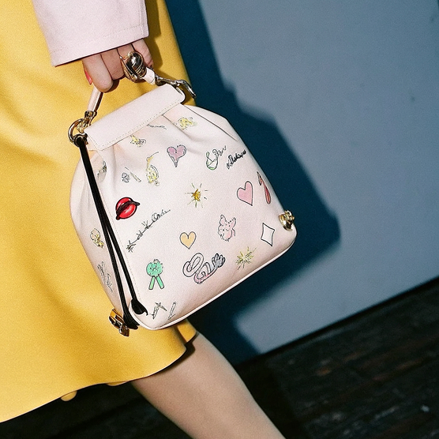
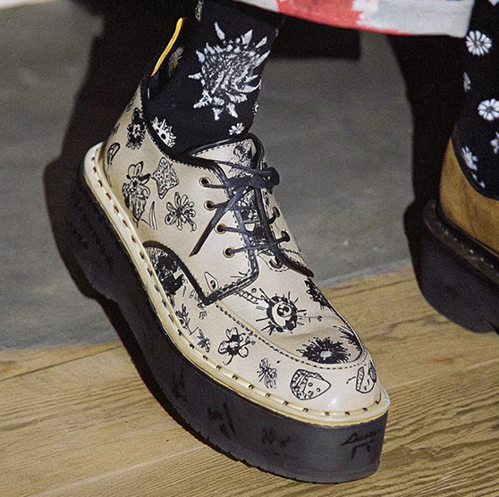
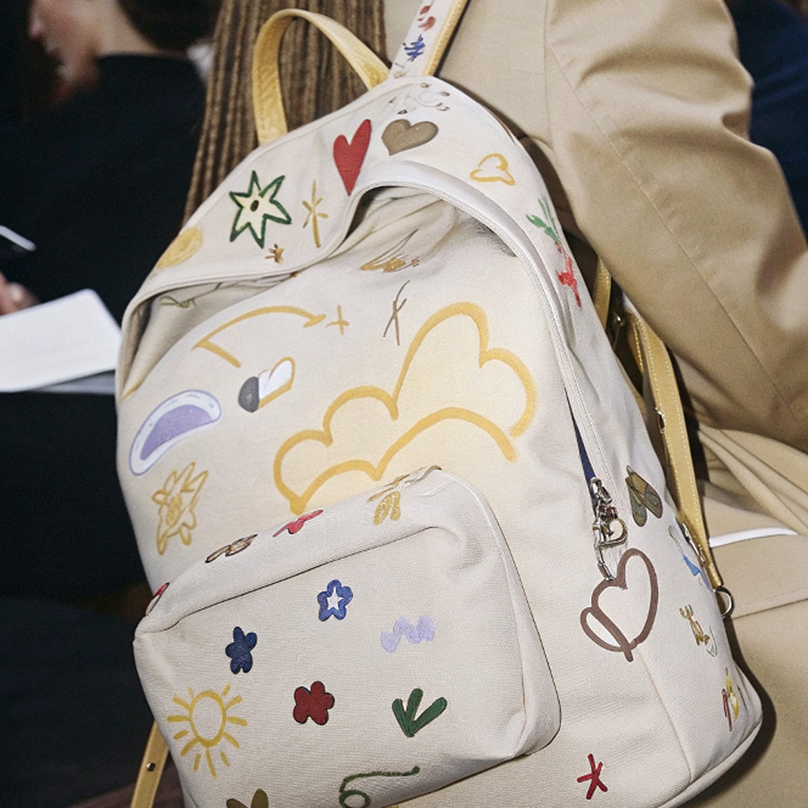
но что, если вы жаждете перемен здесь и сейчас, а кисти и шило кажутся слишком сложными? современная кастомизация предлагает и мгновенные решения, которые подчиняются вашему настроению буквально на ходу
НАКЛЕЙКИ
cпециальные декоративные стикеры или патчи для сумок — простой и доступный способ кастомизации. Их легко менять, перемещать, комбинировать, что делает процесс персонализации динамичным и быстрым. Этот тренд идеален для тех, кто любит часто менять образ и не боится экспериментировать с аксессуарами. Популярность обусловлена удобством и многообразием стилей, от юмористических до элегантных
cобирайте коллекцию патчей и стикеров из поездок — это сделает вашу сумку не просто аксессуаром, а дневником путешествий. И не ограничивайтесь только сумками! Попробуйте разместить небольшой стикер на лацкане пиджака или на джинсовой петле
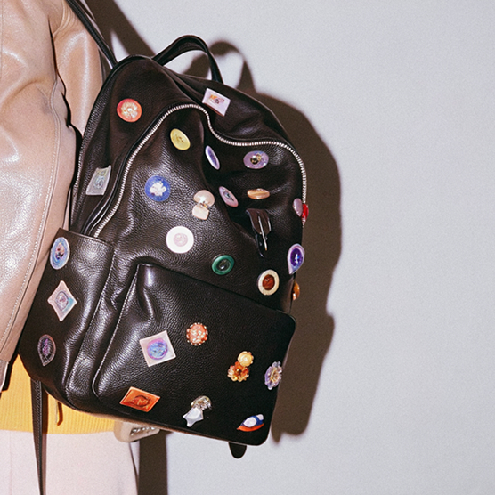
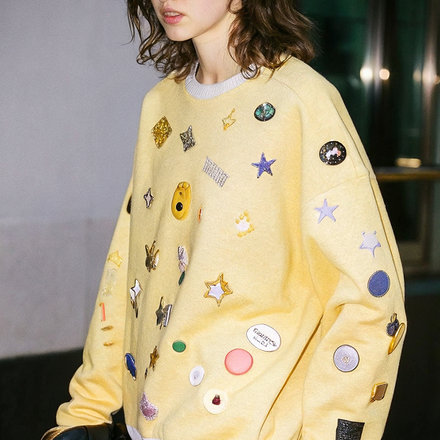
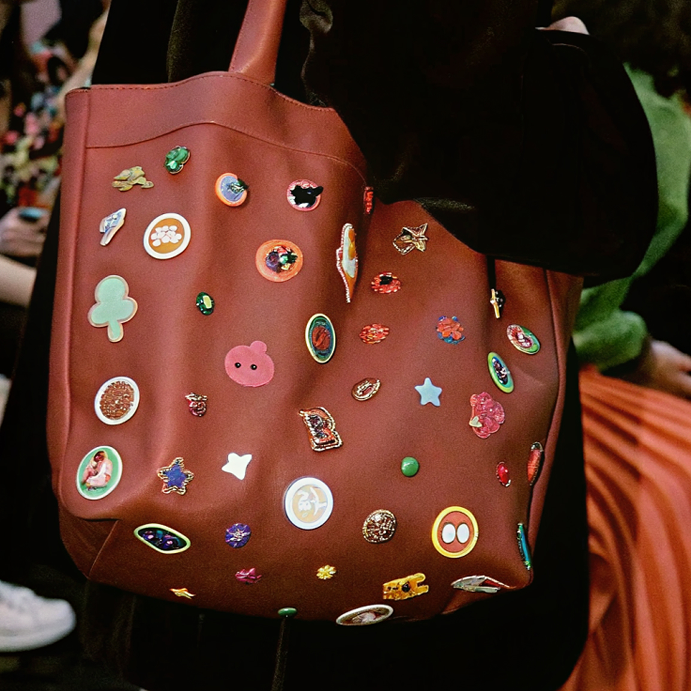
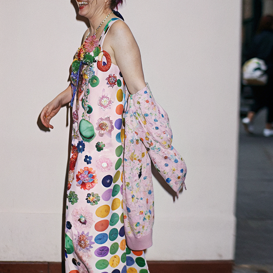
кастомизация больше не нишевое увлечение, а полноценный язык моды. Будь то тяжесть металла на вашей куртке, рукотворный рисунок на кроссовках или ироничный патч на рюкзаке — каждый элемент становится частью вашего высказывания. Не бойтесь комбинировать тренды: добавьте цепочку к расписанной красками сумке или окружите патч россыпью заклепок. Главное правило одно — отсутствие правил. Творите, меняйтесь и носите то, что рассказывает вашу историю